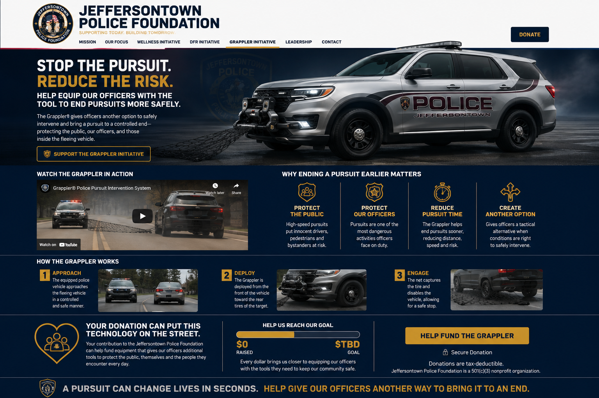

The equipped police vehicle moves into the trained deployment position behind the fleeing vehicle.

GRAPPLER™ INITIATIVE
STOP THE PURSUIT.
REDUCE THE RISK.
Help equip our officers with another pursuit-intervention tool.
The Grappler™ gives trained officers another option to bring dangerous vehicle pursuits to a more controlled end—helping protect the public, officers and everyone sharing the road.
SUPPORT THE GRAPPLER INITIATIVE
WATCH THE GRAPPLER IN ACTION
WHY ENDING A PURSUIT EARLIER MATTERS
P
PROTECT THE PUBLICReducing pursuit exposure can help limit risk to uninvolved drivers, pedestrians and bystanders.
O
PROTECT OFFICERSGives trained officers another intervention option when policy and conditions allow.
T
REDUCE PURSUIT TIMEAnother tool may help bring dangerous pursuits to an earlier conclusion.
+
CREATE ANOTHER OPTIONExpands tactical choices available during fleeing-vehicle incidents.
HOW THE GRAPPLER™ WORKS
The front-mounted Grappler™ deploys heavy-duty yellow webbing/straps toward the target vehicle’s rear tire area.
The webbing captures the rear wheel area and helps trained officers bring the vehicle toward a controlled stop.
COMMUNITY IMPACT
◉
SAFER STREETSAnother intervention option designed to reduce the duration and exposure of dangerous pursuits.
★
SMARTER POLICINGTechnology that gives trained officers another tactical option when appropriate.
♡
STRONGER TOGETHERCommunity donations can help fund specialized public-safety equipment beyond normal budget resources.
YOUR DONATION CAN PUT THIS TECHNOLOGY ON THE STREET.
Your contribution to the Jeffersontown Police Foundation can help fund the Grappler™ system, installation and related implementation costs.
HELP US REACH OUR GOAL
RAISED$0REMAINING$5,270GOAL$5,270
Tracker refreshes automatically from the Foundation campaign total.
♡ HELP FUND THE GRAPPLER
Secure donation
Donations are tax-deductible.
Donations are tax-deductible.
A pursuit can change lives in seconds. Help give our officers another way to bring it to an end.